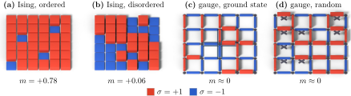
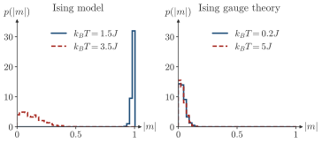

Page 7 of 9 of this session
10.6b The hard case, the Ising gauge theory
What does the classifier do when the magnetization of a snapshot is close to zero in both regimes? We will now see a model with the spins on the links of the lattice, the Ising gauge theory (10.10), where gauge flips make each \(\langle\sigma_i\rangle\) vanish at all temperatures. Its low-temperature and high-temperature regimes are separated by a crossover, since the average of a plaquette product is smooth in \(T\) and does not sharpen as the lattice grows, so there is no finite \(T_c\).
\[H_{\rm Ising} = -J\sum_{\langle i,j\rangle} \sigma_i \sigma_j, \qquad m = \frac{1}{N}\sum_i \sigma_i, \tag{10.9}\]
This is the Ising model of Section 10.6a, with spins \(\sigma_i=\pm1\) on the \(N\) sites of a square lattice and a coupling \(J>0\) that favors parallel spins. The absolute value \(|m|\) of its magnetization is close to one in a snapshot well below \(T_c\approx2.27J\), and close to zero far above it.
In the first part we saw that for the Ising model a local order parameter is enough. Let us now take a model where it is not.
The hard case, the Ising gauge theory. Now we replace the coupling between pairs with a plaquette interaction, which is the product of the four spins around each elementary square of the lattice.
The energy of the Ising gauge theory is
\[H_{\rm IGT} = -J\sum_{p} \prod_{i \in \partial p} \sigma_i, \tag{10.10}\]
with the spins \(\sigma_i=\pm1\) on the bonds of a square lattice, a sum over the plaquettes \(p\) and a product over the four bonds around each of them. Only the plaquette products enter the energy. A flip of the four bonds at a vertex keeps every product, so \(\langle\sigma_i\rangle=0\) at every temperature and \(|m|\) is of order \(1/\sqrt N\) in both regimes, with \(N\) the number of bond spins.
Note that here the spins live on the links of the lattice and not on its sites. At zero temperature the ground state satisfies \(\prod_{i\in\partial p}\sigma_i = +1\) on every plaquette, but this constraint is satisfied by a macroscopic number of different spin configurations. For instance, if we flip the four spins on the bonds that meet at a single vertex, every plaquette product stays the same. The reason is that each of the four plaquettes that touch this vertex contains exactly two of these four bonds, and every other plaquette contains none of them. This local gauge transformation is what gives the model its name. A gauge field that lives on the links of the lattice also appeared in Section 8.10, where it emerged from the parton construction of a spin liquid.
The steps Why every single-spin average vanishes
The simplest case is one plaquette, with four bond spins \(\sigma_1,\sigma_2,\sigma_3,\sigma_4\) in order around the square and the energy \(-J\sigma_1\sigma_2\sigma_3\sigma_4\). The bonds \(1\) and \(2\) meet at a corner of the square, which is a vertex. The flip of both, \(\sigma_1\to-\sigma_1\) and \(\sigma_2\to-\sigma_2\), multiplies the product by \((-1)^2=1\), so it keeps the energy. It maps each configuration with \(\sigma_1=+1\) to one with \(\sigma_1=-1\) and the same Boltzmann weight, so the two halves of the sum cancel,
\[\langle\sigma_1\rangle=\frac{1}{Z}\sum_{\{\sigma\}}\sigma_1\,e^{-H/k_BT}=0.\]
A sum over the \(16\) configurations of the plaquette gives \(\langle\sigma_1\rangle=0\) at \(k_BT=0.2J\), \(J\) and \(5J\).
On the lattice we take any bond \(i\) and a vertex at one of its two ends. The flip of the bonds at this vertex keeps every plaquette product, as we saw above, and it changes the sign of \(\sigma_i\). In the same way as for one plaquette, it pairs every configuration with one of the same energy and the opposite \(\sigma_i\). So \(\langle\sigma_i\rangle=0\) at every temperature, and \(\langle m\rangle=0\).
The same argument gives the size of \(|m|\). For two different bonds \(i\) and \(j\) we take an end of \(i\) that is not an end of \(j\), and the flip at this vertex changes \(\sigma_i\) and keeps \(\sigma_j\). So \(\langle\sigma_i\sigma_j\rangle=0\), and for \(N\) bond spins
\[\langle m^2\rangle=\frac{1}{N^2}\sum_{i,j}\langle\sigma_i\sigma_j\rangle=\frac{1}{N}\]
at every temperature. On the \(16\times16\) lattice of the histograms below there are \(N=512\) bonds, and \(1/\sqrt{512}\approx0.044\) is the size of \(|m|\) in both regimes.
At infinite temperature, instead, plaquettes with product \(+1\) and \(-1\) appear with equal probability. Both the ordered configurations, which satisfy the constraint, and the disordered ones can look, one by one, like a featureless \(50/50\) mix of up and down spins. As a result, the naive order parameter (10.9), which worked perfectly for the Ising model, is useless here. The reason is that no quantity of a single spin can distinguish the two regimes. This is the same obstruction that forced Session 3 and Session 4 to leave local order parameters and to use the Chern numbers of Section 3.5 and the Zak phases of Section 3.9c. What (10.10) reproduces, in a simple classical model, is this feature of those earlier examples.
Note that in two dimensions this model has no true transition and no topological order at finite temperature, and only its ground state at zero temperature has topological order. On a finite system, however, the low-temperature and high-temperature regimes are clearly different, and no quantity of a single spin can distinguish them, which is what makes this model a good test for the classifier.
A convolutional neural network, trained on labeled configurations at low \(T\) and high \(T\) with the same supervised architecture as before, succeeds where the naive summary statistic fails. In practice, the Boltzmann weight depends only on the plaquette products, so the network has to learn a function of these products of four spins.
We should state one more physical point carefully, since it is easy to mix up. The two regimes here are separated by a size-dependent crossover and not by a true phase transition at finite temperature. This crossover moves to lower temperature as the lattice grows. So there is no sharp \(T_c\) that the result converges to as the system grows, unlike the true Ising transition of (10.9). What makes the machine-learning result useful is that the network has seen only one system size during training. It still captures this crossover correctly for other sizes and temperatures, on which it was never trained, and in the example of this session it is evaluated from \(L = 4\) up to \(L = 28\). Figure 10.5 shows the easy and the hard case next to each other in real space, which is where the difference between them can be seen.


g4_ising_snapshots.py
In the Ising gauge theory we flip the four bonds that meet at one vertex. How does this change the plaquette products?
Show the answers
- A. ✗ False
This is false. A plaquette changes sign only if one of its bonds is flipped, or three. Each plaquette of the star has exactly two flipped bonds, so none changes sign.
- B. ✓ True
This is true. Two flipped bonds in a plaquette give \((-1)^2=+1\). Each of the four plaquettes at the vertex has two of the four bonds, so no plaquette product changes.
- C. ✗ False
This is false. Take one plaquette of the star. Two of its four bonds are flipped, so its product gets the factor \((-1)^2=+1\) and not \(-1\). The same holds for the other three.
The Ising gauge theory has spins \(\sigma_i=\pm1\) on the bonds of a square lattice. Its energy is
\[H_{\rm IGT}=-J\sum_p\prod_{i\in\partial p}\sigma_i.\]
The trained classifier does not converge to a finite \(T_c\) as \(L\) grows. Why?
Show the answers
- A. ✗ False
This is false. The network already tells the states at low and at high temperature apart, so it is large enough. There is no transition at a finite temperature for a larger network to find.
- B. ✗ False
This is false. For the gauge theory the average magnetization \(\langle m\rangle\) is zero at all temperatures, since a vertex flip reverses the sign of every bond at the vertex and does not change the energy. A single snapshot has \(|m|\) of order \(1/\sqrt N\) in both regimes, with \(N\) the number of bonds. It cannot be an order parameter at any \(L\).
- C. ✓ True
This is true. The two-dimensional model has order only at \(T=0\). For an open lattice the plaquette average is \(\tanh(J/k_BT)\) for every size, which is smooth in \(T\), so there is no finite \(T_c\) that the classifier could converge to. A classifier that looks for plaquettes at \(-1\) still gives a crossover, and it moves toward \(T=0\) as \(L\) grows.
Each picture shows the bond spins of a lattice of \(3\times3\) plaquettes. Solid red bonds have \(\sigma=+1\), and dashed blue bonds have \(\sigma=-1\). The energy is
\[H_{\rm IGT}=-J\sum_p\prod_{i\in\partial p}\sigma_i,\]
with \(J>0\). The product runs over the four bonds of the plaquette \(p\). Which picture is a ground state?
Show the answers
- A. ✗ False
This is false. Five plaquettes have an odd number of blue bonds, so their product is \(-1\). The energy is \(+J\), which is \(10J\) above the ground state at \(-9J\).
- B. ✓ True
This is true. Every plaquette has an even number of blue bonds, so every product is \(+1\) and the energy is \(-9J\), the lowest possible. The picture is the uniform state after the flips of the bonds at several vertices. It has \(11\) blue bonds, as the other random-looking picture, so \(m\) does not tell the two apart.
- C. ✗ False
This is false. The blue bond belongs to two plaquettes, so both have the product \(-1\). The energy is \(-5J\), which is \(4J\) above the ground state at \(-9J\). The uniform state with all bonds red is a ground state, and one flip costs energy.
Take one plaquette with four bond spins \(\sigma_1,\dots,\sigma_4=\pm1\) and the energy \(H=-J\sigma_1\sigma_2\sigma_3\sigma_4\), with \(J>0\). Compute the thermal average \(\langle\sigma_1\sigma_2\sigma_3\sigma_4\rangle\) at the temperature \(T\), and give its value at \(k_BT=0.2J\), \(J\) and \(5J\).
Solution
We write \(P=\sigma_1\sigma_2\sigma_3\sigma_4\), which is \(\pm1\). Of the \(2^4=16\) configurations, \(8\) have an even number of spins at \(-1\) and \(P=+1\), and the other \(8\) have \(P=-1\). With \(\beta=1/k_BT\) the partition function is \(Z=8e^{\beta J}+8e^{-\beta J}\), and
\[\langle P\rangle=\frac{8e^{\beta J}-8e^{-\beta J}}{8e^{\beta J}+8e^{-\beta J}}=\tanh\frac{J}{k_BT}.\]
This gives \(0.9999\) at \(k_BT=0.2J\), \(0.76\) at \(k_BT=J\) and \(0.197\) at \(k_BT=5J\). On an open lattice of \(2\times2\) plaquettes a sum over the \(2^{12}\) configurations gives the same value for every plaquette. The reason is that there the four plaquette products take all their \(2^4\) sets of values, each one in the same number of configurations.
The value is smooth in \(T\), with no jump and no kink, and on an open lattice it is the same for every size, so the gauge theory has no transition at a finite temperature. It is also a check of a Monte Carlo code. The fraction of plaquettes at \(-1\) is \((1-\langle P\rangle)/2\), which is \(0.40\) at \(k_BT=5J\), and the Monte Carlo run of the gauge theory behind Schematic 10.8 gives \(0.40\) too. The figure does not show this number, since it draws only \(|m|\).